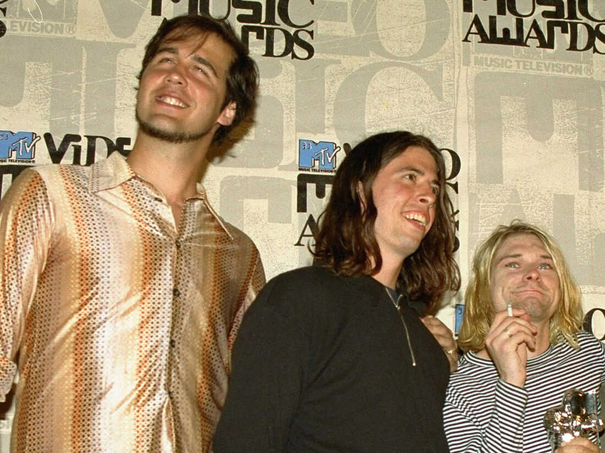

Nirvana was an American rock band formed in Aberdeen, Washington, in 1987. Founded by lead singer and guitarist Kurt Cobain and bassist Krist Novoselic, the band went through a succession of drummers, most notably Chad Channing, before recruiting Dave Grohl in 1990. Nirvana's success popularized alternative rock, and they were often referenced as the figurehead band of Generation X. Despite a short mainstream career spanning only three years, their music maintains a popular following and continues to influence modern rock culture. 